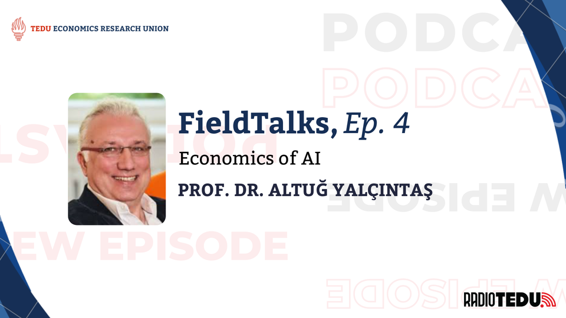
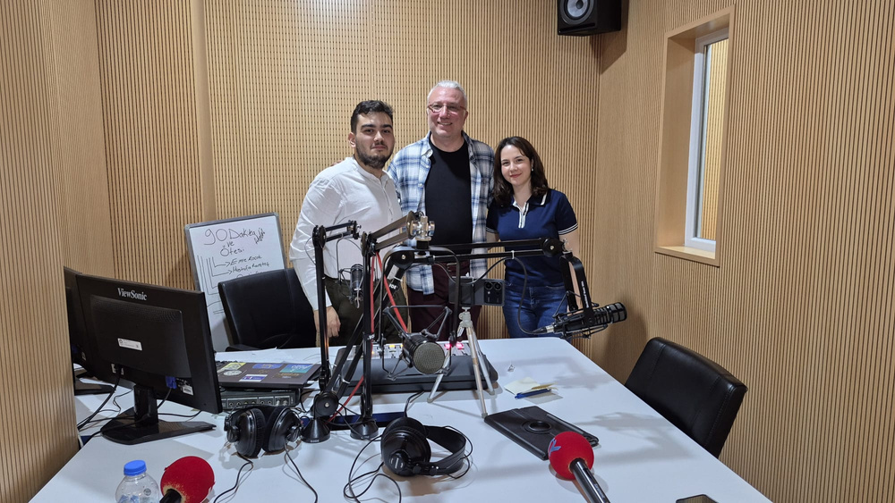

Prof. Dr. Altuğ Yalçıntaş is an economist specializing in complexity economics and, since 2013, the economics of social media and surveillance capitalism. His current research focuses on the societal and economic consequences of artificial intelligence. In this interview conducted for the FieldTalks podcast series—a collaboration between the TED University Economics Research Union and RadioTEDU—he explores how AI reshapes labor, governance, and economies.

What is Artificial Intelligence?
How do AI systems actually work, and what are their limitations?
Artificial intelligence, in its broadest sense, refers to machines that mimic natural intelligence. These systems primarily learn by reading the entirety of open-source material available on the internet. They operate through models, often called Large Language Models (LLMs), which respond to user prompts.
While AI can produce professional and technically accurate answers—which is a positive aspect I find amazing—it inherently possesses the negative biases present in the language it is trained on, such as discrimination, racism, and sexism, which are embedded within the language itself. This is a fundamental limitation that cannot be overlooked.
The Economic Scope of Artificial Intelligence
Which sectors and industries can benefit most from AI?
Any sector that deals with data, directly or indirectly, is highly eligible for using AI technologies. Data production is continuous; people generate data every second through mobile devices and computers, even when they are not actively using their devices—such as browsing Amazon but not making a purchase.
AI tools are common in communications, IT, research and development, coding, legal consultancy, and even mental counseling, although they are not used in every sector, such as construction. AI tools aim to increase efficiency and productivity. They are especially common in creative sectors, used for tasks like text creation, image recognition, translation, music production, design, and data visualization or cleaning.


How do you personally use AI in your work?
I apply AI tools in both creative and academic contexts. As an independent musician, I use AI tools like Suno, AIVA, and Scaler to generate chord structures and assist in finding specific words when I'm blocked during songwriting.
In my academic work, I am currently managing a research project that uses AI to analyze the history of economic thought texts from the Ottoman Empire and the Turkish Republic. The goal is to compile an encyclopedia covering the last 200 years. This project involves digitizing or analyzing existing digital texts using a publicly available custom GPT trained on Ottoman Turkish texts.
Data production is continuous; people generate data every second through mobile devices, even when not actively using them. — Prof. Dr. Altuğ Yalçıntaş
AI and the Labor Market
Will AI take people's jobs?
The question of whether AI will take people's jobs is a common and valid concern, but it is currently an abstract one. While AI may disrupt some roles, like some software developers or translators, it is not expected to affect jobs like childcare or academic historians who do not utilize AI.
The process of "creative destruction" means that while AI removes certain jobs, it simultaneously necessitates new jobs and skills. Historically, new technologies, like the steam engine during the First Industrial Revolution, have not caused structural unemployment, though they often worsened working conditions and created social issues.
The lack of current macro-level data makes it difficult to definitively measure job losses caused by AI, although layoffs have occurred in sectors like IT, indicating micro-level issues. Additionally, if institutions like universities fail to adapt their curricula quickly, the lack of new skills among recent graduates could be contributing to youth unemployment, which existed even before the popularization of AI tools.
Adaptation and the Speed of Technological Change
How fast is AI technology advancing, and what does this mean for workers?
The current era featuring AI represents the Fourth Industrial Revolution. Unlike the first Industrial Revolution, where the steam engine was slow to gain access, AI tools spread rapidly and widely upon release. Academics and professionals must adopt a "learning by doing" approach, as the production speed of academic articles cannot keep pace with AI developments.
Academic articles, which can take years to publish, often present arguments that become invalid upon publication because the underlying technology—such as Spotify's algorithm—has changed. Individuals who avoid using AI tools in fields such as communication, coding, legal consulting or creative fields are at risk of job loss or reduced salary. If employees fail to take advantage of these tools to increase productivity, employers may choose to maintain the same output with fewer workers, thereby reducing total labor costs.
Therefore, it is important to be prepared to use AI as the technology advances autonomously.
Türkiye's Position and Technological Dependency
Where does Türkiye stand in the digital economy?
Türkiye holds a comparatively strong position in digitalization, having successful projects like Ekşi Sözlük, e-Devlet, and DergiPark, which allows academic journals to manage publishing processes openly and freely. Other successes include the defense sector (Baykar), the automotive sector (TOGG), the developed retail sector, and the highly successful gaming sector, where Türkiye ranks second globally. A key positive factor is the presence of many entrepreneurs and public administrators who are curious about and knowledgeable regarding AI.
However, the common use of digital technologies, especially platforms controlled by large foreign monopolies, creates extreme dependence. In a scenario where a large company like Alphabet (Google, YouTube, Gmail) suddenly severed services to Türkiye due to political difficulty or disaster, essential services—including financial transfers and even bread production—could be immediately compromised.
The Rise of Nation-Corporations and the Crisis of Governance
How should we think about the power of tech giants?
Capitalism is changing. Global tech companies like Alphabet, Meta, Apple, and Microsoft should be seen as "nation-corporations," possessing market valuations greater than the GDP of some nations. These entities possess characteristics of a state: they have their own "constitutions" (terms and conditions), vast populations of "citizens" (Netizens) often numbering in the billions—far exceeding the number of their actual employees—and they use propaganda and manipulation similar to states.
Users who rely on services like Gmail or WhatsApp are providing "free labor" (unpaid labor). I suggest that a political movement should demand payment for contributions—such as receiving payment for every Google search, as users are contributing to the platform's value creation. When tech monopolies face legal sanctions, the penalties are often minor compared to the company's daily profits, which may incentivize continued misconduct.
Digital and Mental Resilience
What are the hidden social costs of our digital dependency?
The pervasive nature of digital technology carries significant social costs, including environmental impacts and negative externalizations. Crucially, these technologies contribute to mental health issues like anxiety, depression, and loneliness. Individuals must prioritize their mental well-being in the face of these tools.
This rapid technological shift, where information and services are managed by a few global corporations, is like relying on a single, massive global reservoir for all your water needs. While the water—data and services—is clean, fast, and seemingly free, if that one reservoir breaks, gets politically choked, or decides to charge exorbitant fees, your entire city, from the hospitals to the bakeries, runs dry instantly because no local backup systems were maintained.
As a policy suggestion for Türkiye, I propose an "Offline Drill." This national exercise would involve temporarily shutting down the internet (for instance, for one day) to measure the country's level of dependency, identify vulnerabilities in core systems like financial transfers or government payroll, and develop contingency plans for maintaining daily functions.
Conclusion for Youth and Professionals
What advice do you have for students and early-career professionals?
In this rapidly transforming environment, being an entrepreneur and using one's social intelligence are becoming mandatory. It is vital to cultivate creativity and the freedom to "talk nonsense" systematically, as innovation often arises from unconventional ideas.
I advise students and professionals to pursue non-traditional skills (like Python, R, SQL, and data visualization) beyond what conventional universities might provide. Given the possibility of digital catastrophe—due to war, energy crisis, or corporate failure—which could wipe out intangible digital records of culture and knowledge, institutions must be prepared to transform. The future belongs to those who can adapt, learn continuously, and maintain both digital and mental resilience.